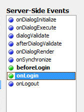
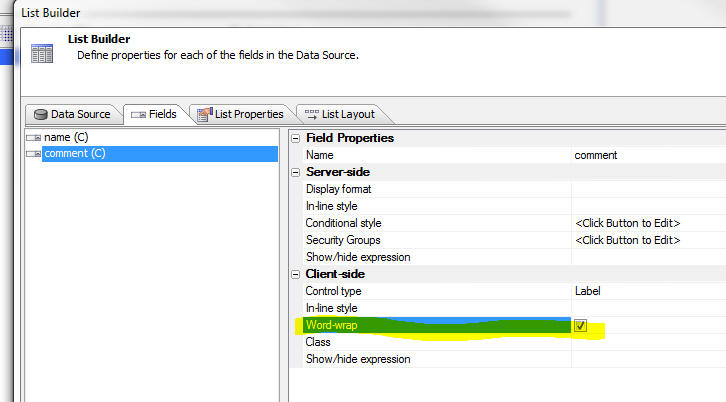
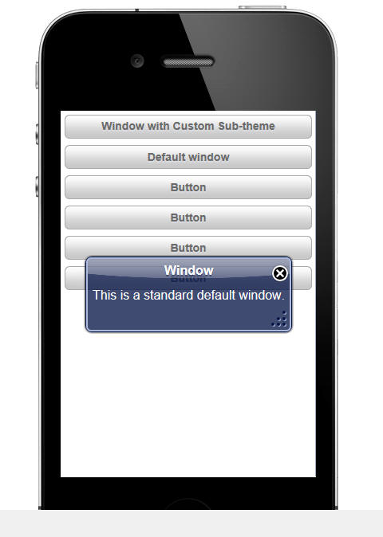

This document describes the updates and fixes made to Alpha Anywhere since its initial release.
To see the 'What's New in V12' document (which describes all of the new features in Alpha Anywhere's initial release) please click here.
Please note that Alpha Anywhere patches are only available to users with
a current subscription.
You can verify your subscription status from within Alpha Anywhere by
going to Help, About, or by clicking this link shown here (https://activation.alphasoftware.com/subscriptionStatus.aspx).
If you install an update for which your subscription is not entitled,
you will need to uninstall the update and rollback to an older version
that you are authorized to use in order to continue using Alpha
Anywhere.
In addition to the official updates that Alpha Software makes available from time to time (which are described in this document), we also make available our internal pre-release builds that allow you to see what features have been added and what bugs have been fixed since the last official update. The features and bug fixes in the pre-release build will be part of the next official update. To see the pre-release notes, please click here.
| UX Component | Chart Control - Dynamically Changing the Chart Appearance by Changing the Stylesheet |
In the previous video we showed how aspects of
the chart appearance could be changed at
run-time. In this video we show how a dynamic
stylesheet can be applied to the chart to
control even more aspects of the chart
appearance. Watch video Download Component TIP: To get started creating a custom stylesheet for a chart, you should start with the style builder, then convert to CSS. See video. |
| UX Component | User-defined Sub-themes to Style UX Component Controls |
Many of the controls on a UX component allow you
to specify a sub-theme. The sub-theme controls
various aspects of a control's appearance and
also behavior. For most of the controls there
are several built-in sub-themes to chose from.
For example, buttons have sub-themes that can
make the button look like a 'back' or 'next'
button. A powerful aspect of sub-themes is the
fact that it is very easy for developers to
create their own sub-themes to create highly
customized appearances for controls on a UX. In this video we show how a custom sub-theme for a window can be created and used. Watch Video - Part 1 Watch Video - Part 2 Download Component |
| UX Component | Getting a Pointer to a Parent or Child Component So You Can Call Methods of the Parent or Child Component |
The ability to re-use components and open a
child component in a window, div, TabbedUI pane,
Panel, or embed into a parent component is one
of the most powerful aspects of the Alpha
Anywhere architecture. When you open a component from a parent component, you will often want to get a pointer to the child component so you can manipulate it in your Javascript code in some way. For example, you might want some code in the parent component to read a control in the child, or set a value in the child. Similarly, you might want some code in the child component to read or set a control in its parent. The .getParentObject() and .getChildObject() methods are used to get pointer to an object's parent or child objects. In this video, we show how this is done. Watch Video - Part 1 Watch Video - Part 2 Download Component |
| Grid Component | Putting the Search Part in a Pop-up Window |
In this video we show how the Search part of a
Grid component can be shown in a window. By
default, the Search part is shown on the page
directly above the Grid part, but by showing the
Search Part on in a window, you can save space
on the page. Watch Video Download Component (requires a connection string called 'Northwind' that points to the sample Northwind.mdb files database in the MDBFiles folder). |
| UX Component | Example App Showing How to Synchronize an Embedded UX Component when a Value in a Parent UX Component Changes |
A common pattern when building mobile
applications is to break the application into
multiple sub-components and then embed child
components into the parent component. Using this
pattern, you break your application into
manageable pieces. However, when you follow this
pattern, it is often necessary to synchronize
the embedded child component when a value in the
parent component changes. In this video we show a sample application that shows customers in the sample Northwind database. An embedded UX component shows the orders for the selected customer. When the user selects a different customer, the embedded 'Orders' UX component is synchronized. Watch Video - Part 1 Watch Video - Part 2 Watch Video - Part 3 Download Components (requires a connection string called 'Northwind' that points to the sample Northwind.mdb files database in the MDBFiles folder). |
| UX and Grid Component | Handling Missing Images |
When a UX or Grid component displays images,
there is a possibility that an image referenced
in an image tag is missing. A new onImageError
client side event allows a developer to
programmatically handle this situation and
decide what image to display in place of the
missing image. Watch Video |
| UX Component - List Control | Custom Layout - Setting a List Item Size to Fill the Screen - Understanding the 'Fill' Option for List item size and Custom Scrolling Options. |
When you are working with a List control that
uses a free-form layout for the List, you can
set the height (and width in the case where the
List is set to scroll horizontally) of each
'row' (i.e. 'item') in the List. In addition to
setting an explicit size (say 200px) for an item
height or width, you can also use the special
'fill' keyword to indicate that the item should
fill the viewport. When you use the 'fill' option, it is often desirable to customize the way in which the List scrolls, so that it scrolls in discrete amounts (for example the size of the viewport) rather than scrolling continuously. By setting the item size to use the 'fill' keyword, and by customizing the List scrolling, it is possible to make a List behave much like a Panel Card in a Panel Navigator. In this video we show how these options are used. Watch Video - Part 1 Watch Video - Part 2 |
| UX Component | Signature Capture Control |
A common requirement in mobile applications is
the ability to capture a signature and store the
signature in a database. In this video we show
how this is easily achieved by placing a
Signature Capture control on a UX component. Watch Video - Part 1 Watch Video - Part 2 |
| Reports | Printing QR Codes |
Video shows how to print a QR Code on a report. Watch video |
| UX Component | Using a UX Component to Create a Login Component for a Mobile Application |
A common requirement for any application, Mobile
included, is to authenticate users before they
can interact with the application. There are
several ways in which authentication can be
performed in Alpha Anywhere. These include using
the standard Login component, or using the
AppLauncher. In addition to the above two
techniques, you can also build a UX component
for performing the authentication. The advantage of building the Login screens using a UX component is that you can make a much richer UI for the login and it can include standard mobile elements like Panel Headers, etc. In this video we show how an authentication layer has been added to a mobile application. Watch Video - Part 1 Watch Video - Part 2 Watch Video - Part 3 Watch Video - Part 4 Watch Video - Part 5 Download Web Project Used in Videos - Note: To use the project, create a new, empty Web Project, then click the 'Open Project Folder in Windows Explorer' button and paste these files into the folder. The passwords for the sample accounts are: a@a.com - aalpha, s@a.com - salpha m@a.com - malpha |
Xbasic - Running External Programs from Within Alpha Anywhere - .NET Framework- A common requirement is to run external programs from with Alpha Anywhere. Xbasic has had the sys_shell() and sys_shell_wait() command for many versions, but you can also use .Net framework methods. The method is:
System::Diagnostics::Process::Start()
For example, say you want to log onto a VPN programmatically from within Alpha Anywhere:
System::Diagnostics::Process::Start("rasdial.exe", "MyVPN MyUsername MyPassword")
To disconnect:
System::Diagnostics::Process::Start("rasdial.exe", "MyVPN /d")
AlphaDAO - Customizing the Connection String - The AlphaDAO connection string builder might not expose some setting that you would like to use. For example, in the case of Postgres, the connection string builder does not expose the option to use SSL.
Here is what an connection string for Postgres might look like:
{A5API=PostgreSQL,Server='localhost',Port='5432',UserName='postgres',Password='mypassword',Database='postgres'}
The properties that we would like to set are:
ssl=true
sslmode=require
In general, any values Alpha Anywhere doesn�t recognize
in the connection string are passed directly through.
This makes it possible to provide values we don�t
support in the user interface yet.
The above connection string can therefore be modified as follows:
{A5API=PostgreSQL,Server='localhost',Port='5432',UserName='postgres',Password='mypassowrd',Database='postgres',ssl=true,sslmode=require}
Xbasic - Making RESTful API Calls - Xbasic offers
quite a number of functions and methods for using the
HTTP protocol to make various requests from web servers.
Sending a RESTful request to a web service is becoming
increasingly popular, but is not always as
straightforward a s requesting a simple resource from a
web server.
REST (representational state transfer) is a general
architectural concept, and specific REST APIs will vary
from web service to web service, so there is no "one
size fits all" solution. However, the Xbasic HTTP
functionality still offers all of the requisite
components. The HTTP method used by the API will define
how you send any required information to the service,
and therefore dictate which Xbasic function to use.
GET is very common because it allows you to simply send
data as part of a query string. The My Movie API is a
good example of this. To search IMDB for the movie
titled "Casablanca", a simple GET request needs to be
sent to http://imdbapi.org/?q=Casablanca.
The easiest way to do this would be by using http_get(), though http_get_page2() and http_fetch() will also work.
For example:
dim MyResponse as p
MyResponse = http_get("http://imdbapi.org/?q=Casablanca")
The response body will be in the MyResponse.body variable. In the above case, the response is JSON data, so you can then use the json_parse() function to parse the response values.
PUT and POST are typically used when more information is
being sent to the web service and generally to be stored
there. http_put() and http_post() are the simplest
functions to use here:
dim Response as p
Response = http_put(<url>,<put_body>)
However, the limitation of both http_put() and http_post()
is that they will always use
application/x-www-form-urlencoded as the body's
content type. If the service to be accessed requires a
body in a different format, http_fetch() must be used so
that the alternate content type may be specified.
For example:
dim Response as p
dim Request as p
Request.Host = "<server>"
Request.Page = "<page>"
Request.Header = "Content-Type: application/json"
Request.Body = "<JSON formatted body>"
Response = http_fetch(Request)
DELETE generally operates the same as GET, just taking
data in a query string. In these cases, http_delete()
may be used just like http_get() would be.
UX Component - Image Upload - Thumbnails - If you had configured the image upload to upload to a binary field in the target table and you had set the stored type to (say) PNG, but you uploaded a file of a different type (say JPG), the code that created the thumbnail image would create a garbage image. This bug only happened if the upload file type was different than the stored file type and the image was stored in a binary field.
Report Editor - Fixed several bugs when editing Workspace reports.
Tabbed UI - UX Components with Panels - UX Components that used Panels did not render properly in the Tabbed UI.
Grid Component - Linking Grids - Fixed an issue were, under some circumstances, the wrong linking value was written into new records in a linked Grid.
a5_getImageSize() Function - Was failing on very large images.
AppLauncher Component - Fixed a number of bugs. If the AppLauncher loaded a TabbedUI, the TabbedUI did not operate properly. The device.isMobile and device.isTablet flags were not getting set correctly for Google Nexus devices.
UX and Grid Component - In-line Style Property - Many of the controls in both the UX and Grid components allow you to define an in-line style. The in-line style builder now has two links at the bottom of the screen that allow you to save commonly used in-line style definitions in a library and then retrieve from the library.
UX and Grid Component - Password Controls - Watermark - When you set a textbox control to be a 'password' control and you also turn on the watermark property, previously, the watermark was not readable because it was displayed using the same characters used to hide the text that the user typed into the field. Now, when no text has been typed into the field, the watermark is displayed in clear text, so it is readable.
Demo Mobile Application - Step-by-step Tutorial - A new step-by-step tutorial on how to build the Demo Mobile Application that ships with Alpha Anywhere is now available. Currently, the tutorial has 16 lessons. More lessons are being added, so be sure to check back from time to time.
http://downloads.alphasoftware.com/a5v12download/BuildingSampleMobileApp.htm
NOTE: If you install Alpha Anywhere updates (as opposed to using the Full Installer), changes that have been made to the Demo Mobile App since your initial full install have not been installed on your machine. You can get an up-to-date version of the sample app here. Unzip this into the Samples\DemoMobileApp folder where Alpha Anyhwere is installed.
Grid and UX Component - Action Javascript - File Download - A number of improvements have been made to this action.
NOTE: You will need to edit and re-save the action to get the new features.
Web Applications - Project Properties Dialog - Allowed File Download Folders - When defining the folders from which files are allowed to be downloaded, you can now use the <ApplicationRoot> placeholder. This placeholder is replaced at run-time with the value for the webroot.
Web Project Properties - Linked CSS Files - The Web Project Properties dialog now allows you to specify linked CSS files. This is useful if you have some CSS that you want to have available to all of the component in your project. Instead of linking the CSS files in the individual components, you can not link the CSS in a central location. The same comments apply for linked JS files.
Grid Component - Detail View - Method for Opening Detail View - A new option has been added for the method for opening the Detail View. The 'programmatic' option allows you to add your own button or event handler to open the Detail View. For example, you might want to have a button in the Grid row that opens the Detail View. The event handler for this would be:
{grid.object}.detailView({grid.rowNumber});
If the button to open the Detail View as not placed in each row of the Grid, but instead was placed (for example), in the Grid header or footer, then the {grid.rownumber} placeholder is meaningless and cannot be used to indicate the row for which the Detail View should be opened. In this case, your Javascript would be:
//get the row number of the currently selected row
var rowNum = {grid.object}._selectedRow;
{grid.object}.detailView(rowNum);
Reports - Printing QR Codes - You can now print QR codes in a report, new printQRCode() function.
To print a QR Code in a report you define a calculated field using the printQRCode() function and then place the calculated field on the report.
The printQRCode() function takes three arguments - the value to encode, the size of the QR code (in pixels) and a flag that indicates if the value should be url encoded (set to .t. by default).
Note: The QR Code function calls into the Google charts api, so an Internet connection is required.
For example, here is how you can define the calculated field to print the 'serialnumber' field:
qrcode = printQRCode(serialnumber,400)
UX Component - Integrated Login Functionality - The UX Component can include integrated login/logout functionality.
This means you don't have to use a separate Login Component, or (AppLauncher with login turned on) to authenticate users in your application.
In this video we show how an authentication layer has
been added to a mobile application.
Watch Video - Part 1
Watch Video - Part 2
Watch Video - Part 3
Watch Video - Part 4
Watch Video - Part 5
The primary use case for integrated login in the UX component is for mobile applications where the application is typically built using a UX component.
However, another use case for the integrated login in the UX is to build a custom login dialog to replace the built-in Login component.
To turn on the integrated login feature, go to the Properties pane on the UX Builder and check the 'Has integrated login functionality' property, as shown in the image below:

Once you check this property you get prompted for some additional properties.
'User name control' and 'Password control' - You must specify which controls on the UX component are used for entering the username and password. Your UX component will therefore need to have two controls (likely textbox controls) where the username and password are entered.
TIP: For the password control, be sure to check the 'Password' property so that the password is hidden when the user is entering it.
Placeholder for login errors - You must put a placeholder control on the UX (see [Placeholder] in the Other Controls section of the UX Builder toolbox) to indicate where login errors should be shown. Use this property to specify the name of the placeholder.
Customize login failure messages - You can customize the various messages that the security framework displays when login errors occur.
Logout does a full page reload - When the user logs out, do you want this UX component to reload?
If you check this option, the component's layout is re-computed on the server (and controls on the UX for which membership in security groups are required are hidden).
Here is why this is an important property to understand:
Assume that when you design the UX component you set the security property on certain controls in the component so that they are only visible to users who are in a certain group (i.e. security role). For example, you might have a button called 'Increase Salary' and you might have set the security on this button to only show the button for users who are in the 'Manager' group.
Assume that the current user is logged in as a member of the 'Manager' group - so she sees this button.
After this user logs out, you will want to ensure that this button is no longer visible. So, forcing the component to reload will cause the server to re-compute the layout of the UX component, and the button will be removed when the server sends back a re-rendered version of the component - because the user will no longer be logged in as a member of the 'Manager' group.
Login/Logout Buttons
Once you have configured your UX component to turn on integrated login functionality, you will also need to add buttons to the UX component to login and logout.
The event Javascript code that will need for these buttons is shown below:
Login
{dialog.object}.login();
Logout
{dialog.object}.logout();
Tip: You can select the 'Login-Logout' item in the 'Defined Controls section of the toolbox to automatically add login/logout buttons and also the placeholder for login errors.
Server-side Events
When the user clicks the 'login' button to login, an Ajax callback is made to authenticate the user. There are several
server-side events for login and logout.

beforeLogin - This event fires before any attempt is made to authenticate the user. A possible use for this event is to log out any user who might be logged in (use the A5WS_LogoutUser() function).
onLogin - Fires after the user is authenticated. The event fires regardless of whether the authentication was successful or not. The e.loginSucceeded flag indicates if the login was successful or not. An important use of this event is to force a reload of the component on login. See the discussion below on 'Forcing a Reload of the UX Component After Login' for more details. This event can also be used to set the 'friendly user name'. The 'friendly user name' is made available in client-side 'afterLogin' event. It can also be used in client-side watch expressions.
onLogout - Fires after the user logs in.
Client-side Events
When the user logs in or logs out there are several client-side events that fire, as shown in the image below.
The afterLogin event can be used to display a message on the screen indicating the (friendly) name of the logged in user.
For example, assume you have a static text control on the UX with this text:
Logged in as: <span id="loggedinusername"></span>
In the afterLogin event, you could add this code:
var ele = $('loggedinusername');
ele.innerHTML = e.userNameFriendly;
You might also put a client-side show/hide expression on the label as follows:
dialog.isLoggedIn = true
This will cause the static text control to be hidden when there is no logged in user.
In a Mobile application, a common design pattern is to put the login screen in a Panel Card and the application in one or more additional Panel Cards. The Panel Cards would then all be wrapped in a Panel Navigator that was set to 'programmatic' mode for the method of navigating the Panels. In the afterLogin event you would set focus to the first Panel Card in the application. In the afterLogout event, you would set focus back to the Panel Card that contains the logn form.
Forcing a Reload of the UX Component After Login
After the user has logged in you might want to force the UX component to reload. Consider the following scenario which explains a use case for this option:
Assume that the application you have built is a single UX component, and it has integrated login functionality. Assume also that this component has certain controls that have security on them (for example a 'Set Salary' button that is only visible to member of the 'Manager' group).
When the UX is initially loaded, the 'Set Salary' button will not be visible (because the user is not yet logged in).
Now assume that the user enters their username and password and clicks the login button. This will fire an Ajax callback and the user will be authenticated. Assume that the user is now authenticated and is part of the 'Manager' group.
This user should now see the 'Set Salary' button, but does not because when the UX was originally rendered, the user was not logged in.
However, by forcing a reload after login, the component will be re-rendered on the server and the user will see the 'Set salary' button.
The way in which you force a reload of the UX component after login is by setting the e.url property in the onLogin server-side event. For example, you could add this code to the onLogin server-side event:
e.url = "<thisComponent>"
NOTE: If you are forcing a reload after the UX
component loads, you will likely also want to set the
'Logout does full page reload' property to true.

Friendly User Name
For security reasons, it is not a good idea to expose the logged in user name on the client-side after the user has logged in. In the onLogin server-side event you can execute code to translate the user name that the user logged in with into a 'friendly' user name which can be safely displayed on the client-side.
For example, assume that you had a table that had two columns - 'userName' and 'friendlyUserName'
An example entry in the table might be:
jsmith23 John Smith
In your onLogin server-side event you would execute code to set e.userNameFriendly by looking up the friendly name for the user name.
Once you have set e.userNameFriendly in the server-side event, it can be used in the afterLogin client-side event and also in watch expressions.
TIP: If you do want to have the real logged in user name available on the client-side (for example, so that you can display it in a message like 'Logged in as: james@acme.com'), then you can always set the friendly name to the same as the user name in the onLogin server-side event.
Client-side Watch Expressions
The client-side watch expressions (e.g. the show/hide, enable, conditional style) can reference the following system fields that are populated with login information:
dialog.isLoggedIn
dialog.loggedInUserNameFriendly
Note: The system fields that you can use in watch expressions also include dialog.loggedInUserName, but this value is always set to 'hidden_for_security_reasons'. If you want to make the real logged in name available on the client-side, then you can set the friendly user name to the real logged in user name in your server-side onLogin event.
Mobile Applications - Adding Login/Logout
The following section describes a common design pattern for adding authentication to a mobile application.
In the image below we show the structure of the UX component that contains the login/logout logic.
NOTE: You can get a quick start building this component for yourself by selecting it from the list of available templates when you create a new UX component. Select the 'Security Framework - LoginComponentMobileApp' template.
The basic structure of this UX component is a Panel Navigator with two Panel Cards. The Panel Navigator has been set to 'Programmatic' (meaning that a Javascript command, and NOT a user 'swipe' on the screen is needed to navigate from one Panel Card to another).
The first Panel Card contains the login and password prompts.
The second Panel Card contains an embedded UX component. This component is your application.
After the user has successfully authenticated, the client-side afterLogin event fires and set focus to the Panel Card that contains the embedded UX (i.e. the application). The client side event executes this code:
{dialog.object}.panelSetActive('PANEL_APPLICATION');
The [Embedded Object] control (i.e. the UX component for your application) is set to only render when the Panel gets focus. This is very important. It means that the embedded component is not rendered until AFTER the user is authenticated. At that point, the server knows what role (i.e. groups) the user is a member of, and when the component is rendered, any controls that are conditioned on membership of specific security groups can be included or excluded in the component.
When the user logs out of the application, the PANEL_LOGIN panel in the parent UX component is shown.
In this video we show how an authentication layer has
been added to a mobile application.
Watch Video - Part 1
Watch Video - Part 2
Watch Video - Part 3
Watch Video - Part 4
Watch Video - Part 5
Xbasic - helper::HTMLProcess Class - A powerful new class has been added to Xbasic to help write code that processes and transforms text. The class is mainly used for processing HTML or XML documents, but it can be applied to other types of documents.
NOTE: See the Documentation Viewer (Help,Open Documentation) for a full list of methods. You might need to click the refresh button on the Documentation viewer if you don't see the topics.
Here are some examples showing ways in which the class can be used.
Example 1: Manipulating attribute values in an HTML document.
Assume that you have a simple HTML document with this content:
<html>
<body>
<img src="Logo.png" >
<img src="Signature.png" >
</body>
</html>
You would like to modify all of the img tags to add a prefix to the src attribute. You would like the resulting document to look like this:
<html>
<body>
<img src="http://myimages.net/Logo.png"
>
<img src="http://myimages.net/Signature.png"
>
</body>
</html>
Here is how the helper::HTMLProcessor class can be used to solve this problem:
dim oldHTML as c
oldHTML = <<%html%
<html>
<body>
<img src="Logo.png" >
<img src="Signature.png" >
</body>
</html>
%html%
'dim an instance of the class
dim hh as helper::HtmlProcessor
'define a handler to call the changeSrc() callback function
'every time an attribute called 'src' is encountered.
hh.AddTagAttributeFilter("src","changeSrc(<tag>,<value>)")
'call the object's .processHTML() method
dim newHtml as c = hh.ProcessHTML(oldHtml)
'define the callback function
function changeSrc as c(tagName as c,tagValue as c)
if tagName = "img" then
tagValue = "http://myimages.net/" + tagValue
end if
changeSrc = tagValue
end function
Here is how the code works:
hh is an instance of the helper::HTMLProcessor object.
hh as a number of methods (see the Documentation viewer for a full list of methods - you might need to click the refresh button on the Documentation viewer if you don't see the topics.).
the .AddTagAttributeFilter() allows you to define a 'callback' function that gets called every time a specified attribute is encountered when processing the document. In this case we specify the 'src' tag (first argument). The second argument is the callback function.
When you define the callback function you can use special placeholders. For example, the callback function is specified here as:
"changeSrc(<tag>,<value>)"
<tag> is the element that contains the 'src' attribute.
<value> is the attribute value.
The actual processing of the input document takes place when the .processHTML() method of the object is called.
Inside the callback handler the code checks to see if the element name is 'img'. If so, then it returns a new value for the 'src' element.
Example 2: Manipulating Elements in an HTML Document
In the previous example, we manipulated attributes in an element. In this example we manipulate all of the text for an element.
For example, assume that the input HTML document looks like this:
<html>
<body>
<code>
var myvar =
'';
myvar =
'alpha';
</code>
</body>
</html>
<code> is some arbitrary element that we want to transform. The resulting document should look like this:
<html>
<body>
[
var myvar = '';
myvar = 'alpha';
]
</body>
</html>
The solution is very similar to example 1. The difference is that instead of adding a callback handler using the .AddTagAttributeFilter() method, this time we add a callback handler using the .AddTagPair() method.
Here is the working example:
dim hh as helper::HtmlProcessor
'define the callback handler.
'the callback handler will be called whenever a 'code' element is encountered
'note that <value> is passed into the callback function. this is the contents of
'the element (including the tags).
hh.AddTagPairFilter("code","","processBlock(<value>)")
dim newtxt as c
'process the document
newtxt = hh.ProcessHTML(txt)
function processBlock as c (txt as c )
dim doc as p
'get a DOM from the text
doc = *xml_document(txt)
dim txtInner as c
txtInner = doc.top.innerXML
processBlock = "[" + txtInner + "]"
end function
The helper::HTMLProcessor class also has some static method that we demonstrate in the next example.
Example 3: Extract Attribute Values
This example shows how you can quickly dump out attribute values for a given element.
Say we have an HTML document that looks like this and we want to extract information about the src and style attributes for each element:
dim HTML as c
HTML = <<%html%
<html>
<body>
<img src="Logo.png"
style="width:200px;">
<img src="Signature.png" >
</body>
</html>
%html%
Here is how we can do this using a static method of the class:
'get list of all image sources
dim images as c
images =
helper::HtmlProcessor::ExtractTagAttributes("img",HTML,"src|||style")
?images
Logo.png|||width:200px;
Signature.png|||
The .ExtractTagAttributes() takes three arguments:
tagName - the tag from which you want to extract attribute values - in this case the 'img' tag
text - the text you want to process
outputFormat - a definition or the output format. In this was we have specified 'src|||style' which means we ant to dump out the value of the src attribute, then 3 pipe characters, then the value of the style attribute.
Example 4: Extracting Elements
In the previous example we dumped the values of attributes of a specified element.
We can also dump out the text (inner or outer) of a particular element using another static method of the class - .extractTags()
For example, assume this input document:
dim html as c
html = <<%html%
<html>
<body>
<div id="id1">
<a href="page1">Go
to page 1</a>
<a href="page2">Go
to page 2</a>
<a href="page3">Go
to page 3</a>
</div>
<div id="id2">
<a href="page10">Go
to page 10</a>
<a href="page20">Go
to page 20</a>
<a href="page30">Go
to page 30</a>
</div>
</body>
</html>
%html%
'Get the outer HTML for all 'a' elements:
outerHTML = helper::HtmlProcessor::ExtractTags("a",HTML,-1,.t.)
?outerHTML
<a href="page1">Go to page 1</a>
<a href="page2">Go to page 2</a>
<a href="page3">Go to page 3</a>
<a href="page10">Go to page 10</a>
<a href="page20">Go to page 20</a>
<a href="page30">Go to page 30</a>
The .extractTags() method takes the tag name, input document, instance number and a logical flag indicating if you want outer or inner html of the tag.
In the above example, the instance number is set to -1, indicating all instances.
To get the inner HTML for all 'a' elements
innerHTML = helper::HtmlProcessor::ExtractTags("a",HTML,-1,.f.)
?innerHTML
Go to page 1
Go to page 2
Go to page 3
Go to page 10
Go to page 20
Go to page 30
Now, lets take this example a little further and assume that we only want to extract the data from 'a' elements that are inside the div with the id of 'id2'.
We can use the .getTagInnerHTML() method to get the inner HTML for the div tag with an id of 'id2'. However, this method takes a tag instance number. We first need to find out what instance number the div with an id of 'id2' is.
'Extract the ids of all div elements
dim allIds as c
allIds =
helper::HtmlProcessor::ExtractTagAttributes("div",HTML,"[id]")
?allIds
= [id1]
[id2]
Now find out what instance number 'id2' is. We wrapped the output from .extractTagAttributes() in [ ] so we actually search for [id2]
dim lineNum as n
lineNum = word_number_get(allIds,"[id2]",crlf())
?lineNum
=2
Now that we know that the instance number of id2, we can extract the innerHTML of this div
dim txtDiv as c = ""
txtDiv =
helper::HtmlProcessor::GetTagInnerHTML("div",HTML,lineNum)
Now get the text for the 'a' attributes in 'txtDiv'
dim innerHTML = helper::HtmlProcessor::ExtractTags("a",txtDiv,-1,.f.)
Example 5: Stripping <span> tags
Another useful static method of the class is the .removeSpans() method which strips <span> tags from HTML.
For example:
dim html as c
html = <<%html%
<html>
<body>
Here is some sample text <span
class="myclass">this is in a
span</span>
and now we are out of the span.
</body>
</html>
%html%
'strip out the span but retain the text inside the span
?helper::HtmlProcessor::RemoveSpans(html)
<html>
<body>
Here is some sample text this is in a
span and now
we are out of the span.
</body>
</html>
UX Component - Signature Capture - A common requirement in mobile applications is the ability to capture a signature and store the signature in a database.
A new Signature Capture control has been added to the UX
component.
Watch Video - Part 1
Watch Video - Part 2
To add a Signature Capture control to a UX component, select the control from the 'Data Controls' section of the toolbox.

You can then define properties of the control in the property grid.
The signature control contains two HTML elements, only one of which is visible at any time:
For example, in the image below, the signature capture control is showing a previously entered signature, so the image element is displayed.
The 'Sign' button that appears below the image is a built-in button (i.e. it is automatically generated by the Signature Control - you can optionally turn it off).

When the user clicks the 'Sign' button, the 'Image' element that displays the signature is hidden and the 'Canvas' element (where the user can sign) is displayed, as shown in the image below:

The 'Clear', 'Cancel' and 'Accept' buttons (like the 'Sign' button in the previous image) are automatically generated by the Signature Capture Control. Like the 'Sign' button, you can optionally turn off these buttons and add your own buttons to control the Signature Capture Control. The buttons perform the following actions:
The image and canvas elements that make up the Signature Capture control are contained within an outer container. When you define the properties of the Signature Capture control you specify the dimensions of the outer container separately from the dimensions of the signature capture area.
The dimensions of the signature capture area must be smaller than the dimensions of the outer container (because the signature capture area has to fit within the outer container) and must not use percentage sizes. For example you can't set the width of the signature capture area to (say) '80%'. The reason for this is that you never want the signature capture area to resize (for example, when the orientation of a mobile device changes), or else a signature captured when the device was using (say) portrait mode would look distorted when you were in landscape mode.
Storing Signatures in a Database
When the user submits the UX component, you can store the signature that the user entered in a field in a table. The signature control must be bound to a binary field. When the UX component is submitted, the value in the signature capture control is submitted as a base64 encoded PNG image. The value is converted to a binary value before it is stored in the table field.
NOTE: In the case where you are storing data in a .dbf table, you must store the data in a PNG image field.
Defining Your Own Buttons to Control the Signature Capture Control
The property sheet for the Signature Capture control allows you to turn off the system generated buttons. If you do this, then you must add your own buttons. Here is the Javascript code that each button must call:
Sign Button
{dialog.object}._functions._toggleCanvas(signatureControlId,'canvas');
{dialog.object}._functions._clearCanvas(signatureControlId);
Clear Button
{dialog.object}._functions._clearCanvas(signatureControlId);
Cancel Button
{dialog.object}._functions._toggleCanvas(signatureControlId,'image');
Accept Button
{dialog.object}._functions._saveCanvas(signatureControlId);
{dialog.object}._functions._toggleCanvas(signatureControlId,'image');
Where 'signatureControlId' is the id of the control.
In order to hide the 'Sign' button when the 'Clear', 'Capture' and 'Accept' buttons are shown, and vice versa, you can hook into the 'onSignatureCaptureToggle' client-side event.
Validating Signature
A common requirement in a UX component is to validate that the user has signed the form when the UX is submitted. You can check that there is data in a signature capture control by adding code to the server-side dialogValidate event. When the UX is submitted, the signature (in base64 encoded form) will be submitted in a special hidden field with the same name as the signature control and a '_HIDDENA5FN' suffix.
The following code in the dialogValidate event will check to see that the user has signed the UX (assuming that the signature control was called 'SIG':
function dialogValidate as p (e as p)
dialogValidate.hasError = .f.
dialogValidate.errorText = ""
if e.dataSubmitted.SIG_HIDDENA5FN = "" then
dialogValidate.hasError = .t.
dialogValidate.errorText = "You have not signed the form."
end if
end function
UX and Grid Component - onImageError Client-side Event - Missing Images - A new client-side event has been added to allow you to handle errors caused by missing images.
UX Component - Repeating Sections - Populating - There has been a substantial improvement in the time taken to populate a repeating section with data. This is especially noticeable when the Repeating Section has a large number of rows and there are multiple client-side watch events in the Repeating Section.
UX Component - List Control - Freeform Layout - 'Fill' Option for List Height or Width - By default, when you define a freeform layout for a List, each item (i.e. row) in the list has a default size (the amount of space taken by the item content), or an explicit size (that you specify - e.g. 200px). A new option has been added when you specify an exlicit size. You can now use the 'fill' keyword (in place of an explicit size).
For example, in a List that is set to scroll horizontally, you can set both the height and width to 'fill'. This will result in each item on the List completely filling the List. You will only be able to see one List item at a time.
The image below shows a List set to scroll horizontally. The item width is set to 150px and the item height has not been set.

In the next image, the item width has been changed to 'fill'. Notice now that each item has the full width of the 'viewport' (i.e. the List).
When you use the 'fill' keyword for a List item dimension (height or width), you can also specify a modifier - an amount by which the dimension should be less than the viewport dimension. E.g. fill-10px.

In the next image, the item height has also been changed from 'blank' (ie. not height specified, so base the height on the item content) to 'fill'. Notice now that the item completely fills the 'viewport'.

When you set a width or height dimension to 'fill' you might want to turn on custom scroll settings, to prevent a situation like the one shown below from happening.
In the image below (for a List set to scroll horizontally), the item width has been set to 'fill' and the user has scrolled the List so that some of row 1 and some of row 2 are shown.
You can set the List so that it scrolls in discrete amounts to prevent this from happening. See the topic 'UX Component - List Control - Custom Scroll Settings' for details.

In the image below, custom scroll settings have been defined so that the List scrolls in discrete amounts (in this case, the width of the viewport). As a result, when you stop drag scrolling, the List animates a complete item into view. A partial item (as in the above image) will never be shown.
UX Component - List Control - Custom Scroll Settings - Normally drag-scrolling on a List is continuous. In other word, when you drag-scroll the List, you can stop dragging at any time and the List will remain scrolled in the position where you stopped dragging. However, you might want the List to scroll in discrete amounts, rather than continuously.
You can define custom scroll settings for a List, or for an individual Layout in a List (if the List has more than one Layout).
When you define custom scroll settings, you can define these properties:
The 'Scroll step size' and 'Offset' can be defined for both the x and y axes.
UX Component - List Control - Freeform Layout - Dynamic Templates - When you define a freeform template for a List control you can now define multiple sub-templates and then automatically select which sub-template to use depending on the data in the current row.
For example, here is a very simple freeform template:
{Firstname} {Lastname}, {State}
Every row of data in the List will be rendered using the same template. So, row 1 of the List might look like this:
John Smith, MA
and row 2 of the List might look like this:
Fred Tyson, CA
However, say you want the template for the row to be completely different for all people in the state of MA and CA. Here is how you would define the freeform template:
{condition:data.state == 'MA'}
put template for 'MA' here
{conditionEnd}
{condition:data.state == 'CA'}
{conditionEnd}
{condition:else}
{conditionEnd}
The condition that follows the {condition: directive is a Javascript logical expression. You can use the 'data' object to reference data values in the current row.
Application Server - Analyze Web Access Logs -
A5W_AnalyzeWebAccessLogs() Function - A new
function A5W_AnalyzeWebAccessLogs() has been added to
analyze web access logs and find the number of requests
per minute. This is a good tool to estimate the loads
being placed on a server. The Enable server Logging
option must be checked in the server configuration on
the Logging tab to create the access logs.
The function is context aware and can be run on the
desktop or on a web page. The function can output the
requests per minute on a chart or in a list showing the
requests for each minute. The list option can include a
list of all IP addresses that accessed the system and
sort the IP addresses by the number of requests.
When run on the desktop, a genie will allow selecting
any access log stored on the computer and select the
output options. If a list is selected, it can be saved
in a file if desired.
To run on a web page, create a page with only this in
the source HTML
<%a5
?A5W_AnalyzeWebAccessLogs()
%>
The function will create the complete page HTML code. A
dropdown control on the page allows selecting any of the
last 50 logs created by the app server running the page.
The web page can create the same chart or list as the
desktop genie. The desired output is displayed on the
page.
An example of the output generated by this function is shown below:

UX Component - Comments - You can insert comments into your UX component to document your component. Components can be inserted at two levels:
To add a comment to any control in the list of selected controls, click the comment icon on the toolbar at the top of the list. The comment icon is shown with a yellow highlight in the image below.
This will open an editor where you can enter your comment.
You can either create a plain text comment, or you can use HTML to create richly formatted comments.
The comment shows up on the right edge of the control list. For example in the image below, the [Panel Card CUSTOMERFORM] control has a comment. You must set the width of the UX builder to be wide enough to see the comment.
The indent level of the comments is set to 6 inches by default, but you can control this value by going to the Properties pane, Advanced section in the UX builder.
You can also turn off comment display if you want by going to the Properties pane, Advanced section.
The comment control is a new control type. You can insert a comment control by selecting it from the 'Other Controls' section in the control toolbox on the left edge of the UX builder. As a shortcut for inserting a comment control, you can select the 'Insert comment' menu from the drop down menu. See the 'Menu' button in the toolbar on the image below.
To edit the comment for a comment control you can either click on the comment icon on the toolbar, or you can double click on the control in the control list.
In the image below three comment controls are shown directly above the [Panel Card: CUSTOMERFORM] control.

UX Component - Comments - Printing Comments - You can print all of the comments in a uX component by selecting the 'Print comments' command on the dropdown menu.
UX Component - Adding Controls - Watermark - Shortcut - A common pattern when building mobile applications is to set control label position to 'None' and then turn on the watermark property. This saves valuable screen real estate.
For example:

Now, a new shortcut when adding controls makes this even easier to do. When you add new controls, the component, the dialog allows you to set the label position to 'watermark'
UX Component - Windows - Drag Scrolling on Window Contents - If a pop-up window contains more content than can be displayed in the window, you can now turn on drag scrolling of the window so that the window contents can be scrolled on touch enabled devices. You can also define 'pull past end' settings (for example, you can define an event when the user drags up on the window contents past the end of the contents).

UX and Grid Components - Client-side Watch Expressions - User Defined Javascript Functions - When defining client-side watch expressions (e.g. show/hide, enable, client-side dynamic style, dynamic images), you have always been able to use user defined Javascript functions in the expression. However, if you put your functions in a private name space in the Grid or Dialog object, the expression would not parse correctly in the builder.
Now, you can use Javascript functions that are in your own namespace within the Grid or Dialog object.
For example, say you defined the following function in the Javascript Function definitions
{dialog.object}._functions.myfunction = function() {
return true;
}
In a show/hide expression, you can now specify this as the expression:
{dialog.object}._functions.myfunction() = true
UX Component - List Control - Long Data Values - Word-Wrap - By default, when a long character value is shown in a List control the data in the list are truncated, not word-wrapped. A new property in the List builder, allows you to turn on word-wrapping.



Xdialog - Double Buffering to Reduce Flicker - {composited} Directive - On large Xdialogs, when you change the display in a list, you might notice some screen flickering. A new Xdialog directive can be used to turn on double-buffering for the screen display to eliminate, or reduce, screen flickering. The directive is:
{composited}
This directive can be placed anywhere in the dialog body. For example:
dlg_body = <<%dlg%
{removecomments}
{composited}
[%O={@@}%.130,40indx^#arr[\].display];
<up><down>
%dlg%
You can download a sample Xbasic script here to demonstrate the effect of this directive.
Component Builders - Preview Pane - The Preview pane has been removed from the builders as it is not necessary. The Live Preview and Working Preview provide a better preview of how your design will look.
UX Component - Data Bound - SQL Tables - Refresh Schema for SQL Tables - When you open a UX component for editing, if the UX has been data bound to SQL tables, the schema that is stored in the UX for each bound table is now automatically refreshed. If you want to turn off this behavior, there is a new property in the Properties Pane, Data Binding section to do so.
Grid Component - SQL Tables - GUID as Primary Key - If you had a Grid based on a table that used a GUID as the primary key, you had to previously add code to the CanInsertRecord event to set the value in the GUID field.
For example:
function CanInsertRecord as v (DataSubmitted as P, Args
as p, PageVariables as p, Result as p)
with PageVariables
Result.Cancel = .f.
Result.ErrorHTML = ""
DataSubmitted.MYGUIDFIELD = *guid_create()
end with
end function
This is now no longer necessary. If no value was supplied for the GUID field, an GUID value will be automatically generated (only if the GUID field is the primary key).
A5W/HTML Page Editor - Remote Test on Mobile Device - You can now do a remote test of an A5W or HTML page directly from the editor.
When you click on the 'Execute Page' button (the yellow lightening bolt), you now get a menu allowing you to select 'Live Preview' or 'Remote Test'. If you select the 'Remote Test' option you will get the standard 'Remote Test' dialog that allows you to easily open the page in the browser on a remote device (e.g. a mobile device).

UX Component - Populating Controls with Data in a Data Bound UX - Ajax Callback - In a data bound UX component, you can make call this method of the UX component to do an Ajax callback and populate the UX component with data for the specified primary key value:
{dialog.object}.populateControlsFromTable
However, if you have your own, user defined Ajax callback, you might want to generate the Javascript to populate the controls with table data in your own callback, rather than triggering a second Ajax callback. A new option in the a5_UX_Action() server-side function allows you to do this. In the example below we show the Xbasic function to handle a custom Ajax callback. Assume the Xbasic function is called myXB.
function myXB as c (e as p)
dim ops as p
ops.primaryKey = primaryKeyValue
ops.showDebugInfo = flagValue
dim javascriptCode as c
javascriptCode = a5_UX_Action(e.ops,"populateControlsFromTable")
dim jsOther as c
jsOther = "any other javascript you want your callback to return"
myXB = javascriptCode + jsOther
end function
UX Component - Embedded UX Component in a Panel Card - Synchronize UX - A new property has been added to the embedded UX component that allows you to automatically synchronize the UX every time the Panel Card gets focus (assuming that the Panel Card is contained in a Panel Navigator).
If this option is checked, the embedded UX component's server-side onSynchronize event and client-side onSynchronizeDialog events are fired.

Dynamically Adding Panels to a Panel Navigator - Closing the Dynamically Added Panel - If the dynamic panel is added to a Panel Navigator that has been configured to use Tab Bands as the method for navigating the child Panels, you can allow the user to close a dynamically added Panel. When the .addPanel() method is called, the JSON object that defines the new Panel should include:
close: true
For example
//get a pointer to the Panel Navigator where the new Panel
will be added
var pNav = {dialog.object}.panelGet('PANELNAVIGATOR_1');
//add the new Panel Card to the Panel Navigator
pNav.addPanel({
name: panelName ,
title: panelTitle,
src : myNewPanelCard,
close: true
});
In the image below, Pane4 was added dynamically with the close option set to true. As you can see, the Tab Band label for the Pane includes a close icon. If you tap on the close icon, the Pane is closed and is removed from the Panel Navigator.

UX Component - Slider Control - onSlide and onChange Events - Previously, when you defined these events you specified the name of a Javascript function and you put your event handler in the Javascript function. Now, in order to make the slider more consistent with how event handlers for other controls (e.g. Switch, ButtonList, List, etc) are defined, the code for the event handlers can now be added directly to the property (you no longer need to call a Javascript function). For backwards compatibility, the old method is still supported. So, if you define the following Javascript for the event handler:
myChangeFunction
This is assumed to be the name of the function that you want to call.
UX Component - Image and File Upload - Xbasic Event Handlers - Control Values - In a UX component, when the server-side Xbasic events defined in the Action Javascript builder fire, the control values for all of the controls on the UX are available to the Xbasic code. For example, assume that the UX had a control called 'FIELD1'. In the Xbasic event handlers, you can reference this value as follows
request.variables.v.r1.field1
UX and Grid Component - Image and File Upload - Filename for Uploaded File - When you upload an image or a file to a target character field (rather than a binary field), the uploaded file is saved in a file in the UploadFolder (defined in the builder) and the filename of the file is saved in the target character field. The filename is derived from the filename of the file on the client machine.
Now, a new property in the builder allows you to define an Xbasic function in which you can compute the filename to use for the uploaded file.
As shown in the screenshot below, the new 'OnStoredFilename Compute Xbasic Function' property allows you to define the name of an Xbasic function. The Xbasic function exposes the 'e' object which has these properties:
You Xbasic function can change the value in the e.targetFileName
property. If you do change this value, the uploaded flle will be stored
in the filename specified by the new value in e.targetFileName
IMPORTANT: The transformation expression (defined in Action
Javascript at design time) will be applied to whatever value is in
e.targetFilename. So, if your event handler changes the value in
e.targetFilename, the transformation expression is applied to this new
value.
Your code can optionally set a value for e.storedValue property in the e
object
If you set the e.storedValue property, this value will be stored in the
target field in the record (and the transformation expression will be
ignored).

A5_imageURL_from_blob() Function - Takes a blob (image data) and creates a URL for the image. A use case for this function would be if you had a table that contained a binary field with some image data in it. You would like to display this image in some html.
Syntax
c URL = a5_imageURL_from_blob(blob as b, imageTypeIn as c, imageTypeOut = "" )
Where imageTypeIn is the image type (jpg, bmp, png) and imageTypeOut is the image type you want to return.
Example
<%a5
dim cn as sql::connection
cn.open("::name::myconnection")
dim sql as c
sql = "select imageblob from products where productid = 1")
cn.execute(sql)
dim b as b
b = cn.resultset.data("imageblob")
dim url as c
url = a5_imageURL_from_blob(b,"jpg","jpg")
?"<img src=" + quote(url) + " />"
%>
AppLauncher Component - The AppLauncher component is designed to address the following problem:
You have designed an application that is accessed through some URL. For example:
www.mycompany.com/salesApp
Some of the users of this application will be
launching your app in a desktop browser, some will be
launching it in a browser running on an iOS phone,
others on an iOS tablet, other on an Android tablet and
so on.
You do not want to have a different URL for each class
of user. However, you want each class of user to launch
a different startup component or page.
By using the AppLauncher component, you can automatically determine what type of device the user is using and then launch the appropriate component, or .a5w page, using the appropriate stylesheet. You can even navigate to a different URL.
For example, if a user us using a desktop browser, you might want to launch a TabbedUI component. If the user is using a phone, you might want to launch a particular UX component, but with one stylesheet for the users on an iOS device, another stylesheet for users on an Android device, and so on.
The AppLauncher component can also, optionally, prompt for username and password, and it can authenticate the user before it launches the startup component.
How the AppLauncher Component Works
The App Launcher component makes an Ajax callback to the server after it is launched. When the callback is made, information about the device that the user is on is passed back to the server. This information is available to determine what startup component to load.
How to Define the Startup Component
To define the Startup Component, click the smart field for the 'Startup component' property.

This will open a builder where you can define a series of logical expressions. When the Ajax callback to the server is made, these logical expressions are evaluated in the order in which they are defined.
For example, in the screen shown below, if 'logicalExpression1' is true, then the UX component called 'ux1' is loaded using the GrBlue stylesheet.
The logical expressions are Xbasic expressions that can reference 'system fields' (such as client.isIPad, client.isAndroid, etc.)
The system fields that the logical expression can reference are actually properties in the A5.flags global Javascript object.
You can add you own system fields in the AppLauncher by adding your own code to the client-side 'beforeTargetIsLoaded' event. Your code would add new properties to the global A5.flags object.
For example, you could add this code to the event:
A5.flags.__myvar = "alpha"
Then, in the logical expressions you define to select the startup component, you could reference this value as follows:
client.__myvar
Two Ways to Launch the Startup Component
There are two ways to load the application launcher:
If the target component is a TabbedUI, PageLayout, or a5w page, then
you have to use the full page reload option.
If you do not use the full page reload option and the style you want to
use for the target component is not the same as the style used in the
AppLauncher you will have to add the target component style name to the
'Additional styles' property.
UX Component - User-Defined Sub-Themes - Most
of the Javascript controls on a UX component support the
concept of 'sub-themes'. This topic discusses how
user-defined sub-themes can be added to a UX component.
Watch Video - Part 1
Watch Video - Part 2
Download Component
NOTE: Javascript controls on a UX component include Panel Cards, Panel Navigators, Panel Layouts, Tabs, Accordions, Buttons, Sliders, SpinLists, ButtonLists, Switches, Lists, Trees, Edit-combos, Auto-suggest, etc.
The sub-theme sets style and behavior properties of the control. Out of the box, each control type comes with one or more built-in sub-theme. For example, the Button control type comes with the following built-in sub-themes:
Every control type has a sub-theme of 'base' and this sub-theme is implied if no sub-theme is explicitly set.
The sub-themes for a given style (e.g. iOS, MobBlue, etc.) are defined in the style.js file in the folder with the same name as the style. (e.g. CSS\iOS\style.js)
Developers can define their own sub-themes by adding code to the style.js file, (in which case the new sub-theme will be available to all components that use a particular style), or by adding the sub-theme in as a 'locally' defined sub-theme as part of the UX component.
To define a local sub-theme, use these properties in the UX builder:

A sub-theme typically has both a Javascript aspect to it and a CSS aspect.
In the image below, a window with the default appearance for a window using the iOS theme is shown. In the builder where this window was defined, no sub-theme was specified (which means that the 'base' window sub-theme was used).

However, in this next image, a custom sub-theme for the window was used. The appearance of the window has been completely changed as a result of applying the sub-theme. Notice that the window does not have a title, it is semi transparent (you can see the controls that are behind it), and the close button is positioned slightly above and to the right of the top right corner of the window.

To define this new window sub-theme, the following code was added in the 'Local sub-themes definition - Javascript' property of the UX component:
{
window: {
customSubTheme: {
className: 'customWindow',
title: {
className: 'customWindowTitle',
tools: {
inset: '-12px',
verticalInset: '-12px'
}
},
body: {
className: 'customWindowBody'},
_defaultTools: {
'close' : {
action: 'close',
name: 'close',
image: 'css/iOS/winClose.png'
}
}
}
}
}
NOTE: The above Javascript was not written from scratch. It was copied, then modified, from the style.js file for the style (in the CSS folder)
In addition, the following code was added in the 'Local sub-themes definition - CSS' property:
.customWindow {
background:rgba(0,0,0,.5);
color: white;
border-radius: 10px;
}
.customWindowBody { padding: 10px; text-shadow: none;}
.customWindowTitle { overflow:hidden; height: 0px; }
The Javascript shown above for the local sub-theme definition is a simple JSON object. The JSON object defines an object called 'window' which is the type of control for which the sub-theme is being defined. Within the 'window' object, a sub-theme called 'customSubTheme' has been defined. In this case only additional sub-theme for the 'window' class was defined, but you would define an unlimited number of window sub-themes.
The sub-theme simply defines CSS class names to use for various aspects of the window and also defines other properties. For example, the 'inset' and 'verticalInset' properties define the placement of the window 'tools' relative to the top, right corner of the window (in this case, the only 'tool' is the close button).
UX Component - Chart Control - Dynamically Changing Chart Appearance at Run-time - You can now dynamically change certain chart properties at run-time to alter the chart appearance.
Watch Video - Part 1
Watch Video - Part 2
Download Component
Changing the chart stylesheet:
Watch video
Download Component
The properties in the chart that can be changed can be bound to controls on the UX component. When the chart is refreshed, the value for these 'bound' properties are read from the corresponding UX component controls.
Certain chart properties (such as the chart title) are defined by an expression (e.g. "My Chart Title" - this is an expression because it is enclosed in quotes). However, if you have a control on the UX (called say 'chartTitle'), then you can set the chart title expression to: chartTitle (no quotes). This means that the chart title will be read from the chartTitle control on the UX component.
Other properties (such as whether the chart is 3D or 2D) are not controlled by expressions. To bind these properties to UX controls, you need to open the 'Binding - Dynamic Charts' builder in the chart builder.

Once you open the builder for Dynamic Charts, you will see a dialog like this:
This allows you to define a CR-LF delimited list of chart bindings. For example, in the image shown above, the
ChartType property of the chart control is bound to a control on the UX component called chartType